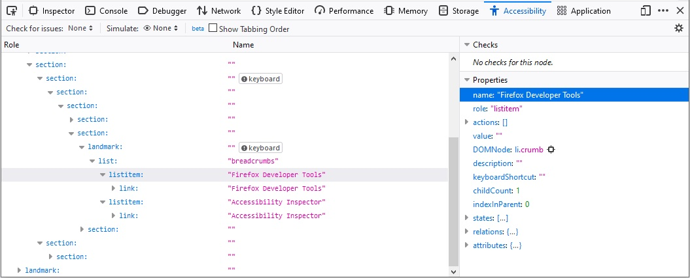
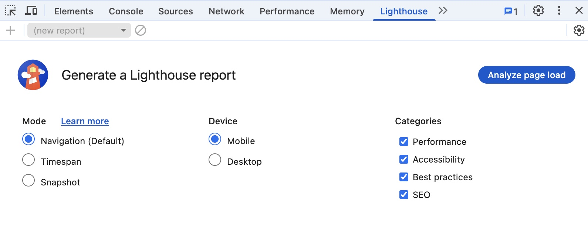
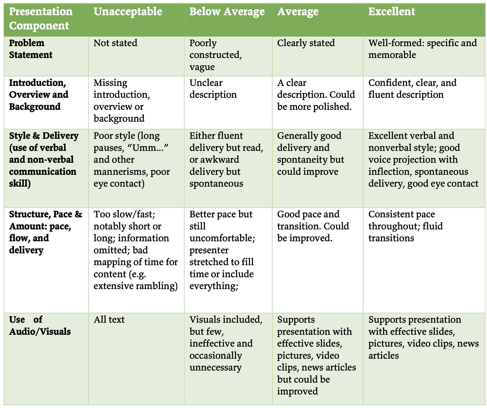

Final project I
Today
- Accessibility
- Final project
Recap from last class
- Accessibility
- Principles
- Guidelines
- Tools
Accessibility
Commonly abbreviated as a11y
Accessibility principles
Perceivable, Operable, Understandable, and Robust (POUR)

Perceivable
- All essential information must be perceivable to
all users
- For different types of disabilities (e.g., visual, mobility, …)
Making information perceivable to all users
- Examples
- Text alternatives to essential icons and images
- Captions
- Not relying on only color to convey meaning
Operable
- Users must be able to operate the interface
- Can’t require interaction that a user is unable to perform
Operable by all users
- Examples
- Keyboard and touchscreen support to all active elements
- Giving users enough time to fill out a form
Understandable
- Information and the interface operation must be understandable
- Examples
- Has predictable navigation
- Error messages are clear and easy to resolve
Robust
- Accessible to users using both older and future technologies
- Examples
- Works for different screen reader technologies
- Content and functions work for different device sizes
Accessibility
- Principles
- Guidelines
- Tools
Semantic html leads to better accessibility
<div>Play video</div>👎🏾 Don’t
<button>Play video</button>👍🏾 Do
Use the correct HTML elements
Structure page sections logically
<header><nav><main><article><aside><footer>- …
Structure page sections logically
<header>
<h1>Header</h1>
</header>
<nav>
<!-- main navigation in here -->
</nav>
<!-- Here is our page's main content -->
<main>
<!-- It contains an article -->
<article>
<h2>Article heading</h2>
</article>
<aside>
<!-- aside content in here -->
</aside>
</main>
<footer>
<!-- footer content in here -->
</footer>
Use semantic UI controls whenever possible
- Use buttons, links, and form controls
- Provides default keyboard accessibility
Use semantic UI controls whenever possible
<!-- Using <div> for buttons -->
<div data-message="First button">Click me!</div>
<div data-message="Second button">Click me too!</div>👎🏾 Don’t. Use buttons instead
Use meaningful text labels
- Button and link text labels should be understandable and distinctive
- Try to avoid using “Click here”
- Context might be lost for screen reader users
Make sure your labels make sense out of context
Try to avoid using “Click here”
Whales are really awesome creatures.
To find out more about whales,
<a href="whales.html">click here</a>.
👎🏾 Don’t
Whales are really awesome creatures.
<a href="whales.html">Find out more about whales</a>.👍🏾 Do
Use Form label to provide context
Fill in your name: <input type="text" id="name" name="name" />👎🏾 Don’t
<label for="name">Fill in your name:</label>
<input type="text" id="name" name="name" />👍🏾 Do
Text alternatives
- Images can’t be seen by people with visual impairment
- We should provide
altdescription for the screen reader
Provide
alt description for non-decorative images
<img src="old-main.png" />👎🏾 Don’t
<img
src="old-main.png"
alt="The Penn State Old Main building"/>👍🏾 Do
Provide
alt description for non-decorative images
- Describe the image and what it conveys visually
- Should be brief and concise
- Do not duplicate the surrounding text
Empty alt is
ok for decorative images
<img src="article-icon.png" alt="" />When the image is only for visual decoration
Color
Don’t rely on only color to convey information
Click the green button for next item👎🏾 Don’t
Color contrast
- The foreground and background color contrast is important
- Make sure that people with color blindness can read the content
Accessibility
- Principles
- Guidelines
- Tools
Firefox (Dev Tools –> Accessibility)

Chrome (Dev Tools –> Lighthouse)

Todo
- Open Activity 23 in Chrome
- Run an accessibility audit
- Dev Tools –> Lighthouse
- Fix the issues
Today
- Accessibility
- Final project
Final project
- Proposal submission: 5 points
- Proposal presentation: 8 points
- Final presentation: 10 point
- Code and documentation: 20 point
- Mandatory group review: 2 points
Next todos — 10/30
- Proposal submission
- Proposal presentation
Proposal submission
Outline of plan and timeline — around 2 pages
Check syllabus for details
Presentation Rubric (Files –> Final Project)

Proposal presentation
- No in-person presentation
- You will upload links for video and slides
- We will talk about presentation next Tuesday
Today
- Selecting project topic
- Sketching out UI and interaction
Grading rubric for final submission (see syllabus)
- The app must be installable using Chrome — 1.5 points
- The app (and the browser version) should work for different devices — 4.5 points
- At least 3 non-trivial pages with user interaction support — 3 points
Grading rubric for final submission (see syllabus) — contd.
- Stores and retrieves persistent data — 3 points
- Includes icon and consistent theme — 3 points
- Ensures accessibility — 3 points
- Documentation for the code and the system — 2 points
Bonus Features (maximum 5 points)
5 non-trivial pages or more — 1 point
Use of camera — 1.5 points
Use of microphone — 1.5 points
Use of location — 2 points
Integrates user facing generative AI features — 3 points
Examples from previous classes
- Fitness app
- Music sharing
- Cooking/Recipe
- IST Career Solution
- Athlete profile
- Public Transit/CATA
- TV recommendation
- Fashion
- Sustainability
- Budgeting
Group activity
Select project topic — Create a doc
- Describe the app
- What problem are you trying to address?
- Who are the potential users?
- What are the features?
Group activity
Sketch out at least three screens of the app
Group activity
- Post the doc and screen images to the discussion forum